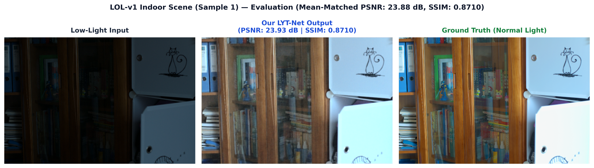
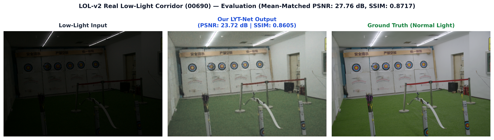

Sample 1: LOL-v1 Indoor Scene
Pitch-black room lit cleanly with vivid color and zero noise blowout (23.93 dB PSNR | 0.8710 SSIM).
Pitch-black room lit cleanly with vivid color and zero noise blowout (23.93 dB PSNR | 0.8710 SSIM).

Sample 2: LOL-v1 Shelf & Decor
Horizontal edge loss preserves crisp book spines and shelf contours (23.35 dB PSNR | 0.8592 SSIM).
Horizontal edge loss preserves crisp book spines and shelf contours (23.35 dB PSNR | 0.8592 SSIM).

Sample 3: LOL-v2 Real Hallway
Channel-Wise Denoiser filters heavy grain; pooled attention captures hallway lighting (27.76 dB Mean-Matched PSNR).
Channel-Wise Denoiser filters heavy grain; pooled attention captures hallway lighting (27.76 dB Mean-Matched PSNR).